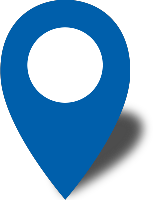

<!DOCTYPE html>
<html>
<head>
<meta charset="utf-8">
<title>Events happening in UAE</title>
<meta name="viewport" content="initial-scale=1,maximum-scale=1,user-scalable=no">
<link href="https://api.mapbox.com/mapbox-gl-js/v2.5.1/mapbox-gl.css" rel="stylesheet">
<script src="https://api.mapbox.com/mapbox-gl-js/v2.5.1/mapbox-gl.js"></script>
<link rel="stylesheet" href="pop-up.css"> 
<style>
body { margin: 0; padding: 0; }
#map { position: absolute; top: 0; bottom: 0; width: 100%; }
</style>
</head>
<body>
<style>
    
   
</style>

<div id="map"></div>

<script>
	mapboxgl.accessToken = 'pk.eyJ1Ijoic2hyaXNoMjE1MCIsImEiOiJja3ZheHVzMjMwMW10MnBtcDN1anRhdzk1In0.KxRts0zBdRNcgddcPLbNiw';
    const monument = [55.2708,25.2048]; //center coordinates
    const map = new mapboxgl.Map({
        container: 'map',
        style: 'mapbox://styles/shrish2150/ckvc7wk781zux15o2nnjyznzw',
        center: monument,
        zoom: 15
    });

   


    
    
        
        map.on('load', () => {
map.addSource('geo', {
type: 'vector',
url: 'mapbox://shrish2150.ckvc78uqx0g0i21nxs9imu15a-84rhc'

});
 
map.addLayer({
'id': 'geo-layer',
'type': 'circle',
'source': 'geo',
'source-layer': 'geo',
'paint': {
'circle-color': '#4264fb',
'circle-radius': 6,
'circle-stroke-width': 2,
'circle-stroke-color': '#ffffff'
}
});
});

const popup = new mapboxgl.Popup({
closeButton: false,
closeOnClick: false
});

map.on('mouseenter', 'geo-layer', (e) => {
// Copy coordinates array.
map.getCanvas().style.cursor = 'pointer';
const coordinates = e.features[0].geometry.coordinates.slice();
const title=e.features[0].properties.title;
const description = e.features[0].properties.description;
const start=e.features[0].properties.start;
const location=e.features[0].properties.location;


// Ensure that if the map is zoomed out such that multiple
// copies of the feature are visible, the popup appears
// over the copy being pointed to.
while (Math.abs(e.lngLat.lng - coordinates[0]) > 180) {
coordinates[0] += e.lngLat.lng > coordinates[0] ? 360 : -360;
}
popup.setLngLat(coordinates).setHTML(
    "<h1>"+title+"</h1>"+" <p1>"+description+"</p2>"+"<p> "+start+"</p><p> "+location+"</p>"
    ).addTo(map);

});

// Change the cursor to a pointer when the mouse is over the places layer.
// Change it back to a pointer when it leaves.
map.on('mouseleave', 'geo-layer', () => {
map.getCanvas().style.cursor = '';
});


</script>

</body>
</html>